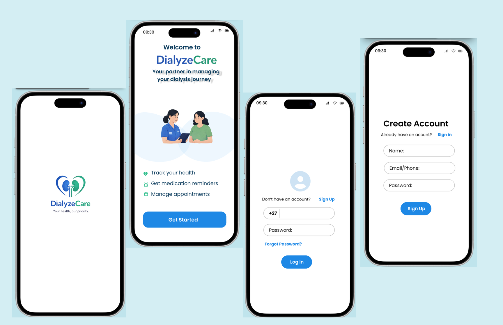
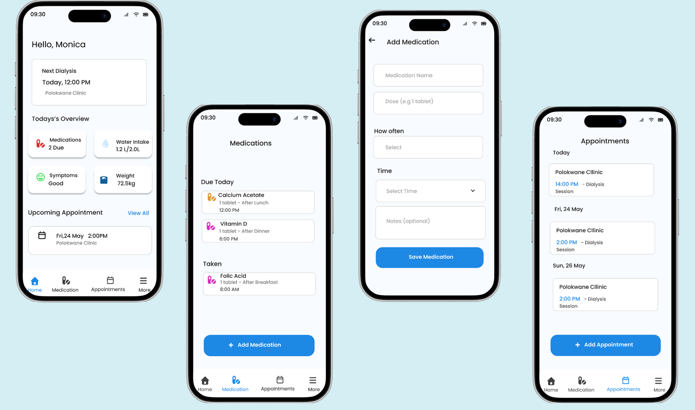
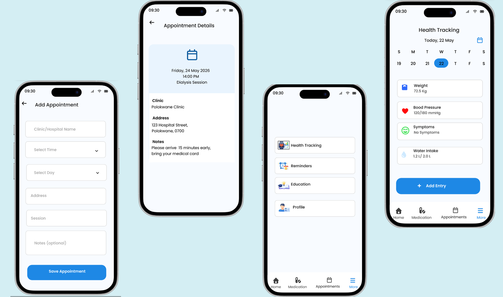
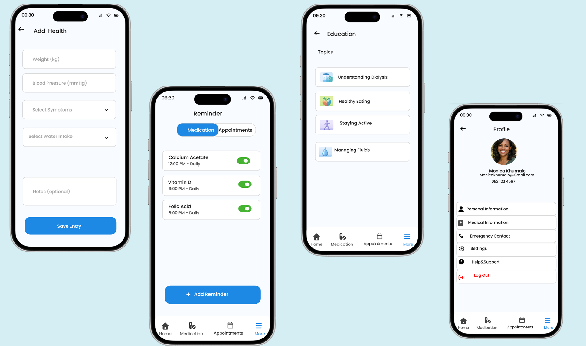

CASE STUDY / DIALYZECARE
DialyzeCare
A healthcare mobile app designed to help people on dialysis treatment record their health, manage their daily routines and learn more about taking care of their health.
Making everyday dialysis care easier to manage.
DialyzeCare was designed as a mobile health companion for people receiving dialysis treatment. The app brings important health information, reminders and educational content into one simple place.
How might we make it easier for dialysis patients to keep track of their health and daily treatment routines?
Managing dialysis can involve remembering appointments, medications and health information while also keeping track of symptoms, weight, blood pressure and fluid intake.
Create a simpler way to stay informed and organised.
Record weight, blood pressure and symptoms.
Set reminders for appointments and medication.
Record daily water and fluid intake.
Access simple educational information about dialysis and everyday health.
Understanding the everyday experience, not just the treatment.
The design focused on the everyday tasks that can become difficult to manage when health information, appointments and medication routines are spread across different places.
Users need an easy way to record important measurements and review their health information.
Appointments and medication schedules need to be visible without requiring users to remember everything.
Health information should be easy to find, understand and revisit when needed.
If important health information, reminders and educational resources are brought together in one simple interface, users will find it easier to stay organised and engaged with their daily care routine.
Calm, clear and easy to understand.
The interface was designed to feel reassuring rather than overwhelming. Health information is presented in small, understandable sections with clear actions and visual hierarchy.
Used for its clean and approachable appearance, supporting readability across the app.
White , light blue and blue create a clean, calm and healthcare-focused visual language.
Testing the experience with everyday health tasks.
Record weight and blood pressure.
Check symptoms and fluid intake.
Receive appointment and medication reminders.
USER PROFILE
Monica Khumalo
38 years old
USER
Monica is a 46-year-old dialysis patient who needs to manage several parts of her treatment routine alongside her everyday life.
She needs a simple way to keep track of her health information, remember appointments and medication, monitor her fluid intake and learn more about caring for herself.
Instead of keeping information in different places, DialyzeCare brings these tasks together in one accessible mobile experience.
Record weight · Record blood pressure · Track symptoms · Monitor water intake · Set reminders · Learn about dialysis care
A simple dashboard for everyday health management.
The final interface brings health tracking, reminders, educational content and personal information together without making the experience feel complicated.




Bringing daily dialysis management into one place.
Health information is easier to record and review.
Important appointments and medication routines are easier to remember.
Educational information is available when users need it.
The visual system creates a calmer and more approachable healthcare experience.
DIALYZECARE — DESIGNED FOR EVERYDAY CARE